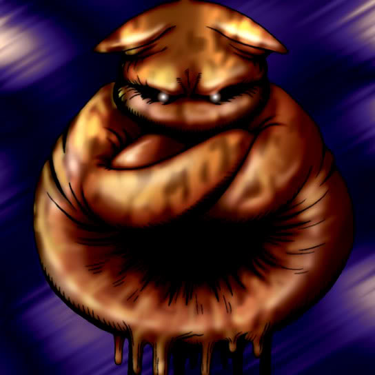

Embryonic Beast

Description: "After being turned face-up, transforms into a Ryu-Kishin after surviving 3 turns in a face-up, defense position. However, the card must be turned up by the controlling player."
STATS
ATK: 500
DEF: 750DECK COST
Deck Cost per Card: 18EFFECT NOT IMPLEMENTED
Fusion List (10 Possible Fusions)
- Embryonic Beast + Arlownay = Rose Spectre of Dunn
- Embryonic Beast + Dragon Statue = Koumori Dragon
- Embryonic Beast + Fungi of the Musk = Darkworld Thorns
- Embryonic Beast + Job-Change Mirror = Summoned Skull
- Embryonic Beast + One-Eyed Shield Dragon = Koumori Dragon
- Embryonic Beast + Petit Dragon = Koumori Dragon
- Embryonic Beast + Supporter in the Shadows = Tiger Axe
- Embryonic Beast + Time Wizard = Summoned Skull
- Embryonic Beast + Wicked Dragon with the Ersatz Head = Koumori Dragon
- Embryonic Beast + Yamatano Dragon Scroll = Koumori Dragon